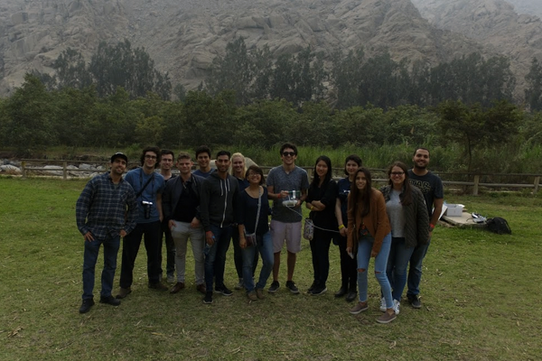
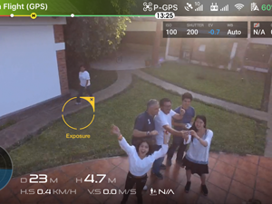
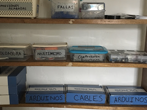
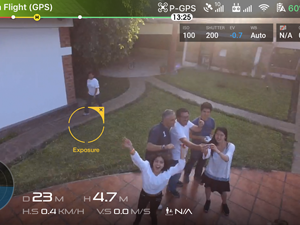
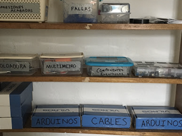

Design Engineering Instructor
NGO: United Technologies for Kids
Summer 2017

In Peru, as part of the second cohort sent by the United Technologies for Kids (a Peruvian NGO), I went to Chincha, a city in the Ica province, to start a makerspace with a teaching partner (Ryan Cosner). There, at the Colegio of Santa Maria I taught a variety of design engineering concepts including Arduinos, 3D printing, soldering, and more. Every day for three weeks, I taught kids from 7th grade to 12th grade for two hours in primarily Spanish.
 



Process
Throughout the Spring 2017, I worked with a team of Berkeley students to create an Arduino and 3D curriculum. I led the curriculum development of the Arduino side, created a teaching plan that began with electronics basics and progressed more advanced sensing and actuation. I incorporated Fritzing diagrams and extended activities with LED displays and motors to help familiarize students with circuits.
*The first drafts of my curriculum were based off of labs I had done in the fall 2016 offering of Tangible User Interfaces, a graduate class taught by professor Kimiko Ryokai and graduate student Noura Howell. Huge thanks to them!
When I arrived in Peru, my days revolved around preparing for our taller, or workshop. My host family would drop off my partner Ryan and I at the colegio with their kids, and we would spend our mornings and early afternoons translating and editing our workshop lesson plans. We taught kids how to read engineering diagrams to create light sabers, hack their own water ionization conductivity probes, and diffuse 3 red, green, and blue LEDs under 3D-printed luminaires.
Teaching
We had to start from the ground up and first teach the fundamentals of programming and logic. Rather than printing 'Hello world', I thought it would be more inspiring to introduce loops through visual coding.
Once they got the hang of iteration and initializing, we quickly dove into Arduino electronics. Using potentiometers, force-sensitive resistors, and piezo speakers, we taught students how to create theremins, propel motors, and analog control LED lanterns. Beyond labs, special projects included creating water conductivity sensors and flying drones.
During the second week, we switched gears and taught CAD and 3D printing. Again, the pace was rapid: we moved from keychaining to more advanced principles like patterning and lofting in a matter of days. Students also were introduced to engineering diagrams and slicing software.
Some examples of slides below!
Intro to programming slides
Intro to Arduino slides
On June 7th (which happened to be my 20th birthday, we were all whisked to Lima to present at an educational fair. Our students took their projects and labwork to demonstrate their progress and meet the other freshly-minted makers across Peru (from Arequipa, Puno, Chincha, and Lima). My teaching partner and I actually spoke a few times at press conferences and at this conference as a closing speaker.
In the latter half of my stay in Peru, I also went to work on an assistive technology project.


Reflection
Teaching in Peru was a terrifying endeavor, but each and every day I am glad that when I was 19 I was daring enough hop continents and try it, because there honestly isn't a day that goes by where I don't think back to my time in South America. Sometimes I think about the taxi driver that I laughed and conversed with via Google Translate, who told me about how he used Twilight to learn English. Sometimes I think about the six year-old girl named Majo who played Duolingo with me. She said apple as I said manzana. Or the girls who invited me to kick ball with them after I ate lunch and chatted with me about animes.
But mostly I think back to my students, who taught me how to appreciate brilliance and diversity. Some would stay after class and listen to us teach modular arithmetic and vector math. Others worked on CAD at home, designing chess pieces and light sabers as they revelled in flexing their new creative capabilities. Everyone I met welcomed me with open arms, hearts, and minds.
Our students taught us about Peruvian culture as well. Two of my students moonlighted as tour guides through Chincha Baja and Chincha Alta, taking us through electronics stores, ruins, and chifa, the hybrid Peruvian-Chinese fare found all over Peru. My host families took me into the heart of industrial agriculture, showing me the part of Peru that is a cornucopia from which the world is fed.